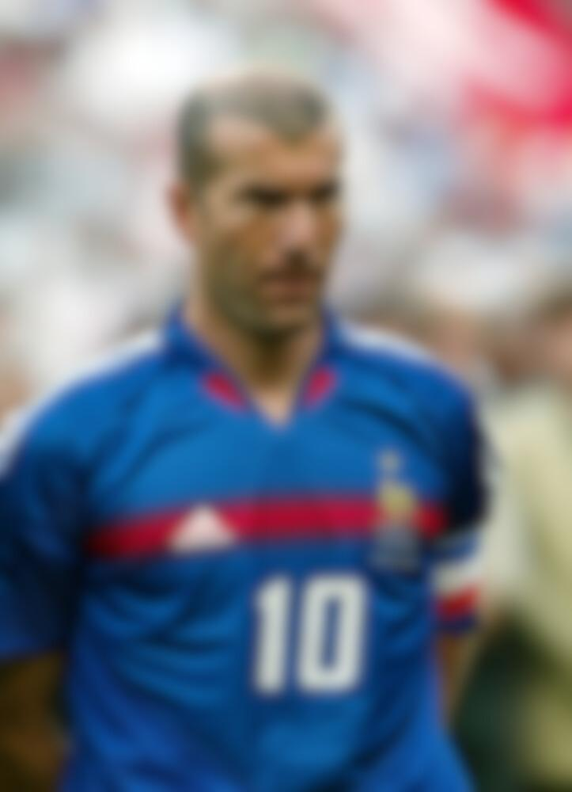

Agent Gabin, ta mission, si tu l’acceptes :
Infiltrer le cœur du football parisien. Prépare-toi à découvrir ce que même un fan du Barça ne peut refuser…
Défi 1 – Quiz “Connais-tu ton ennemi ?”
Défi 2 – Devine l’image
Quel joueur est sur cette image ?
Révélation du cadeau

Félicitations, Agent Gabin ! Tu as brillamment accompli ta mission. En récompense, tu es invité à une visite exclusive du Parc des Princes lors de ton prochain passage à Paris. Prépare-toi à fouler la pelouse, découvrir les coulisses et peut-être même croiser une star du PSG… même si ton cœur reste en Catalogne.
Signé : Ta marraine parisienne